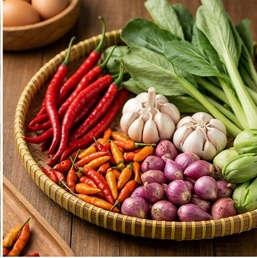
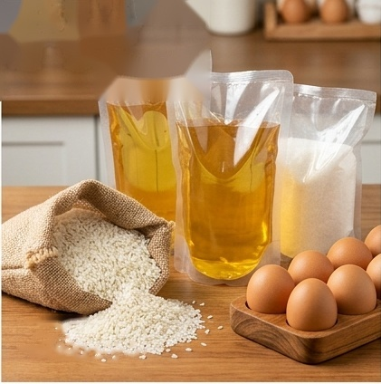
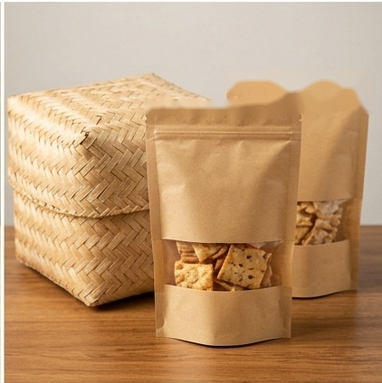
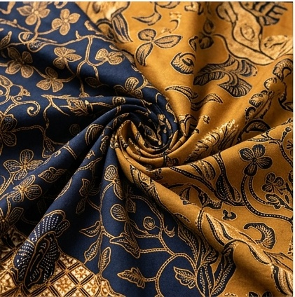
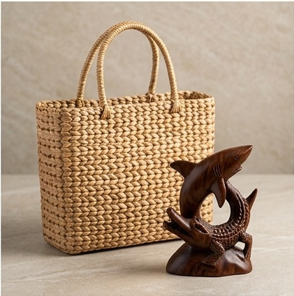
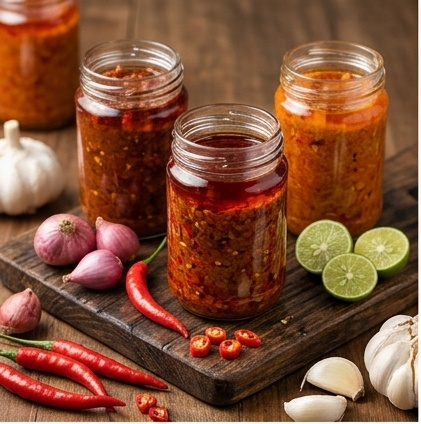
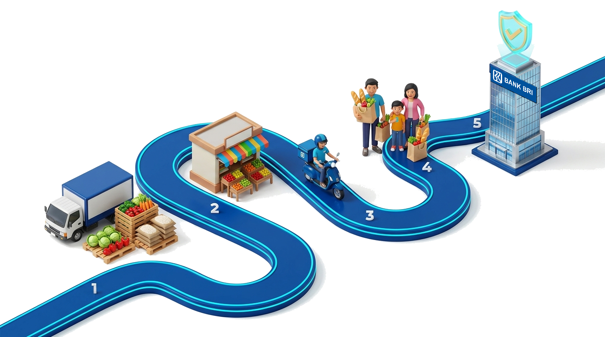

SANTARA mengintegrasikan distribusi pasokan bahan baku dan komoditas grosir dari produsen serta distributor utama kepada jaringan pelaku usaha UMKM di Surabaya dengan penjaminan transaksi Rekening Penampung Escrow resmi Bank BRI.
Rantai Pasok Terpadu UMKM
Santara tidak membatasi jenis usaha. Setiap UMKM binaan perbankan dapat memesan kebutuhan grosir maupun memasok produknya ke jaringan ekosistem.

Cabai rawit merah, bawang merah Probolinggo, sayur mayur panen harian, tomat, dan bumbu dapur basah langsung dari tengkulak induk tangan pertama.

Beras premium karungan, minyak goreng jerigen/pouch, gula pasir kristal, tepung terigu, dan telur ayam ras untuk stok etalase warung kelontong.

Kotak anyaman besek bambu tradisional, standing pouch food-grade, thinwall bento, dan kardus cetak ramah lingkungan untuk katering & oleh-oleh.

Kain batik khas Surabaya motif Daun Semanggi & Mangrove Wonorejo, bahan kain katun rayon, benang bordir, ritsleting, dan bahan baku busana lokal.

Anyaman eceng gondok Semanggi, miniatur patung ikon Sura & Baya, kerajinan kayu, aksesoris cinderamata, dan produk kriya binaan Pemkot Surabaya.

Sambal bawang kemasan toples, sambal klotok cumi Surabaya, Spikoe lapis kuno, olahan kerupuk ikan Kenjeran, dan bumbu dapur siap olah harian.
Sambal bawang kemasan toples, sambal klotok cumi Surabaya, Spikoe lapis kuno, olahan kerupuk ikan Kenjeran, dan bumbu dapur siap olah harian.
Satu alur terintegrasi menghubungkan supplier pangan dan distributor hulu, ribuan warung serta usaha UMKM, armada ojek pengantar, masyarakat Surabaya, hingga penjaminan dana resmi Bank BRI.

Pedagang besar Pasar Induk Keputran, distributor sembako, dan produsen bahan baku. Mendapat kepastian pesanan volume besar dengan jaminan uang tunai langsung cair dari rekening penampung.
Warung makan, toko kelontong, kios sembako, konveksi & bengkel. Membeli pasokan harga grosir langsung, hemat HPP s.d. 28% tanpa perantara calo, dan fisik barang dicek sebelum uang dicairkan.
Pengemudi ojek pangkalan dan kurir lokal Surabaya diberdayakan jadi armada logistik resmi. Mendapat order antar barang harian dan verifikasi serah-terima cepat berbasis kode OTP.
Warga Surabaya menikmati kuliner, sembako, dan aneka produk UMKM dengan harga terjangkau, kualitas segar higienis, dan pasokan harian yang selalu stabil di warung sekitar rumah.
Mengunci uang transaksi di Rekening Penampung (Escrow) hingga barang sesuai, serta menyediakan fasilitas pinjaman modal kerja KUR Mikro dari riwayat belanja terpercaya.
SANTARA bukan sekadar aplikasi belanja, melainkan rantai pasok terpadu yang menghubungkan produsen atau distributor, seluruh pemilik usaha UMKM, kurir armada pengantar, hingga pembeli dan masyarakat di Surabaya.
Pedagang pasar induk, distributor FMCG, pabrik kemasan, dan produsen bahan baku mendapat kepastian borongan volume besar.
Warung makan, toko kelontong, kios sembako, perajin konveksi, bengkel, hingga toko ritel mendapatkan pasokan langsung dari distributor.
Mitra pengemudi dan armada logistik lokal melayani pengantaran bahan dan produk terpusat per klaster kecamatan di Surabaya.
Masyarakat penikmat produk dan jasa UMKM merasakan harga yang stabil, pasokan terjamin, dan mutu produk yang terjaga.
Tiga integrasi digital Bank BRI yang mengamankan transaksi pasokan UMKM dari distributor ke pembeli.
Sangat mudah dipahami pedagang pasar, pemilik warung, toko kelontong, hingga kurir pengantar.
Pelaku usaha pesan lewat HP, bayar pakai QRIS BRI. Uang pembayaran Anda dititipkan aman di rekening resmi Bank BRI, bukan di rekening perorangan calo.
Barang tiba di toko atau warung. Anda timbang dan cek mutunya. Hanya setelah Anda setuju, uang di Bank BRI dicairkan ke penjual & kurir.
Setiap transaksi belanja otomatis tercatat di LinkUMKM. Usaha Anda langsung berhak mengajukan modal kerja KUR Mikro BRI tanpa jaminan fisik yang rumit.
Kami percaya rantai pasok yang hebat harus mudah dipahami siapa saja.
SANTARA memangkas calo perantara, menjamin uang Anda tidak hilang, dan memudahkan modal usaha.
Kebutuhan bahan baku dan barang dagangan dapat dipesan harian langsung dari sentra grosir dan distributor resmi tanpa batasan volume transaksi.
Konsolidasi pesanan kolektif antar pelaku usaha dalam satu wilayah kelurahan untuk memperoleh harga borongan tingkat pabrik yang jauh lebih hemat.
Dana transaksi tersimpan aman di rekening penampung resmi Bank BRI dan baru diteruskan kepada penjual setelah spesifikasi fisik barang diverifikasi.
Rekam jejak transaksi terverifikasi secara otomatis menjadi dasar penilaian kelayakan pembiayaan modal kerja KUR Mikro melalui integrasi LinkUMKM.
Kolaborasi strategis Bank BRI Regional Office Surabaya dan Danantara Indonesia
menjamin proteksi pembayaran, jaringan distribusi lokal, serta permodalan ribuan UMKM.
Pembayaran aman tersimpan di rekening resmi Bank BRI dan baru dicairkan setelah mutu dan jumlah barang tervalidasi di lokasi.
Digitalisasi tata kelola pedagang besar sentra pasar induk dan distributor utama binaan BRI untuk kepastian pasokan barang usaha.
Jaringan gerai AgenBRILink di 31 kecamatan Surabaya sebagai simpul distribusi barang dagangan dan otentikasi serah-terima cepat OTP.
Pencatatan transaksi historis pada ekosistem terhubung langsung dengan platform LinkUMKM untuk percepatan pembiayaan modal usaha resmi.
SANTARA menghubungkan produsen utama langsung ke pemilik usaha UMKM di Kota Surabaya dengan garansi proteksi perbankan resmi PT Bank Rakyat Indonesia (Persero) Tbk.